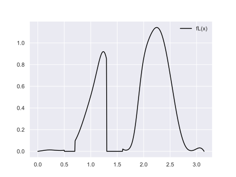
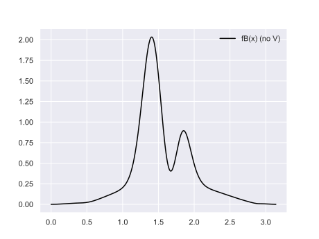

Monte Carlo Integration is a way to integrate a function when it isn't feasible to integrate it analytically. Here I will try to show how it works using 1D-functions but the method itself works in any dimension. This document is written to build intuition around Monte Carlo integration and it will not be super rigorous.
The function we are integrating will always be called \(f(x)\) and for this particular arbitrary function \(f\) the parameter \(x\) is defined on the interval \([0,\pi]\).
Now the integral is simply the area below the curve. The idea here is that while we can easily evaluate \(f(x)\) by evaluating it pointwise we don't have access to a simple expression for \(f(x)\) that we can integrate. This is usually because \(f\) is not a simple function (as in an analytic function) but rather an involved procedure that returns a value for each \(x\).
First let us pretend that we want to find the integral of \(f(x)\) on many machines but we are only allowed to evaluate \(f(x)\) once on each machine. Today many will mean 5 to make it easier to create figures! What do we do? One thing we can do is to divide the x-interval into 5 pieces (cells) and let each machine estimate the integral within their cell somehow. Then we sum up the 5 integrals from the 5 cells to find the total integral (the area under the entire curve).
How should each machine evaluate \(f(x)\) within its cell then? It seems that we are back at our original problem. Let us ignore that for a while and continue. One alternative would be to place a sample in the middle of the cell and multiple by the width of the cell. That leaves us with a rectangle approximating the integral for each cell. The height of the rectangle is given by \(f(x)\) for the x-value at the middlepoint of the cell. The answer would not be correct but at least we are not trying to approximate the full function with a single rectangle. If we added more machines it would become more and more accurate. The integral from each cell would be equal to the area of the rectangle instead of the integral of \(f(x)\) itself.
But what if a friend comes along and she let us know that she has tried the same thing on her 5 machines? It would be nice if we could somehow “merge” our result with her result. But that is not possible if we both have the same value for the integral! Calculating the integral twice didn't improve the estimate. If we had synced this experiment first we could have split the function into 10 pieces and calculated half each and then summed up. But is there another way to do this without talking first? Or maybe we found out that doing 5 estimates was faster then we anticipated so we have time for 5 more. Where do we place them such that we can improve on our previous result? In an ideal world we would get an early estimate of the real value and then as time goes by we can refine the estimate until either the world ends or we end up with the true value of the integral.
The problem with our current scheme seems to be that we always choose the point in the middle. If we instead choose a point at prob within each interval then our estimates of the integral in that interval would be different each time. Lets take a step back. What if we had no intervals at all, just the entire function to estimate with some samples. Would placing them probly work out? For this to make sense we must shrink the width of the samples the more samples we take. Now I want to point out that estimating \(f(x)\) in one of our five intervals is really the same as estimating it in the entire interval (it is just integral estimation) so lets go back to estimating the full integral and not just one little piece. Our progressive (which here means gradually improving over time) estimates with random placed samples in \([0,\pi]\) then would be
\begin{eqnarray} e_0 & = & \pi f(x_0) \\ e_1 & = & \frac{\pi}{2} (f(x_0)+f(x_1)) \\ e_2 & = & \frac{\pi}{3} (f(x_0)+f(x_1)+f(x_2)) \\ e_3 & = & ... \end{eqnarray}
where \(x_i\) would be chosen totally prob. Here the factor \(\pi\) comes from the range of x-values so it is not a magical \(\pi\) that should appear just because it is monte carlo integration. This is the same as what we did before, only that our \(x\) values were placed evenly then. This newer formulation is very handy in that we don't have to decide how many samples we need before we start. If we get more time we can do more. We can merge results from different computers easily by summing them (applying weights it the machines has done a different amount of samples) etc. We can gladly take the result from our friend and merge it in.
This thing that we have concocted here is called a Monte Carlo estimator. The property that we can add together different estimates makes this estimator unbiased. The estimator we did first placing the samples in the middle of the intervals was biased. We need an unbiased estimator to be able to add together different estimates to get a better estimate.
Note that if we have taken 12 samples and our friend only 3 samples then the estimates should be weighted properly such that more weight is given to our better estimate.
At this point I want to write out the general formula of the estimator. It rewrites the \(\frac{\pi}{N}\)-term as \(p(x)\) where \(p(x)\) represent the probability to choose a particular x-value. If we choose the x-values uniformly (probly and evenly) \(p(x)\) will be constant (and equal to \(\frac{\pi}{N}\) in our example above for an estimate with \(N\) samples). When we look at importance sampling \(p(x)\) will no longer be constant.
The full formula then, using \(p(x)\), is
\begin{equation} F = \frac{1}{N} \sum_i^N \frac{f(x_i)}{p(x_i)} \end{equation} where \(x_i\) are out x-values, \(f\) is the function we want to integrate, \(p\) is the probability distribution function that says how often we choose a \(x\)-value and \(N\) is the number of x-values. \(F\) is a single value representing the integral of \(f\) (which is a function). Note that it is just an approximation of the true integral.
Variance
A section on variance is sorely missing. For now think of the variance of our estimate as how noisy it is. There are bounds on how fast the variance decreases as we take more samples. Stay tuned!
Importance Sampling
The core idea of importance sampling is that if we divide our function into many small parts (like we did before into 5 intervals) we should spend more effort getting the answer right in the intervals where the integral is large. So lets make those intervals wider!

Getting the answer 5% wrong in an interval where the true integral value is 0.1 is not as bad as getting it 5% wrong in an interval where the true integral value is 100.
Now we can divide it even further into say 1000 pieces and apply the same reasoning. Or we can do it using actual importance sampling where we do it in a continous fashion. We have a probability distribution function \(p(x)\) that gives probability density for a given value \(x\).
Now to complicate things we often don't actually know \(f(x)\) analytically. We might know a part of it or we have some sort of upper or lower bound on it. In path tracing it is quite common that we have that \(f(x)\) is a product of a few different functions and we might know the properties of one or two of them. Sometimes we know all the components but it is impractical to figure out the proper widths of the intervals. This is often the case when the dimensionality is high.
We realize that if we fail to guess at the size of \(f\) we might make things worse. The expression \(\frac{f(x)}{p(x)}\) in our monte carlo estimator might give very high values for some \(x\) due to the fact that we divide by \(p(x)\) that might be a very small number. This would be ok if \(f(x)\) was very small but if it isn't we are in a lot of trouble. This produces very high intensity noise that requires MANY samples to get rid of.
Some pseudo code:
float importance_sample_f(float u, float *p) {
// given a random value u in 0-1
// return a x-value with prob p(x)
float x = ...;
*p = ...;
return x;
}
float estimate_f(int N) {
float f = 0;
for (int i=0; i < N; i++) {
float p;
float x = importance_sample_f(uniform(), &p);
f += eval_f(x)/p;
}
return f/N;
}
Multiple Importance Sampling
Lets say that we have a function \(f(x)\) that we want to integrate (find area under curve for)

Now in this example we don't actually have access to this function. Instead it is composed as the product of three terms, like \(f(x)=B(x)L(x)V(x)\). The two first terms, \(L(x)\) and \(B(x)\), have known analytical expressions and we can do importance sampling of those individually. It doesn't have to be optimal importance sampling. The third term \(V(x)\) is expensive to calculate but we know that all values are below 1.0 such that it can only make the product smaller.
If we remove \(V(x)\) from \(f(x)\) we get \(B(x)L(x)\) which is what we can hope to importance sample since \(V(x)\) has no analytical expression. First we assume that we are unable to actually do importance sampling according to \(B(x)L(x)\) which is often what happens as soon as we enter higher-dimensional functions (x is maybe three dimension and both B and L depends on many other parameters as well). Here we can see the function that want to importance sample somehow
Note that we will still use the full function \(B(x)L(x)V(x)\), it just that we can't factor in \(V\) so we just have to hope that it won't mess up. Now lets first think about why standard importance sampling is a bad idea. First lets name the probability distribution functions \(p_B(x)\) and \(p_L(x)\) that says how often we pick a x-value when doing importance sampling according to \(B\) or \(L\). When we do monte carlo integration we must sometimes choose x values that are unlikely. We do so with a low probability and then, to stay unbiased, we must boost them. We do that by dividing by the probability of choosing that x-value. Dividing by a small number yields a big number. If we importance sample according to \(B(x)\) and hit a large value in \(L(x)\) there will be a boost. Here I've tried to graph the badness of sampling using improper importance sampling. What is pictures if \(\frac{f(x)}{p(x)}\) when using importance sampling with two different choices of \(p\)
We see that the maximum value is quite big. When sampling using importance sampling based on \(L\) we sometimes get a very bright color (larger than 13) back. Same when are sampling according to \(B\). This makes us realize that importance sampling is best when either lighting is very flat (single color sky) or material is very smooth (diffuse). Otherwise we might get worse result from importance sampling compared to doing uniform sampling.
Anyway. Ok we are ready for MIS! These two methods, sampling according to \(L(x)\) and sampling according to \(B(x)\) are called techniques when it comes to MIS. For now we will stick to two techniques that we use equally much and try to build intution, but Veach thesis shows how this works for multiple techniques with an arbitrary amount of samples from each.
The idea now is to introduce two functions such that \(f(x)=f_L(x) + f_B(x)\). This is not a new \(f(x)\) but the same one we have been dealing with all along (\(B(x)L(x)V(x)\)). We estimate \(f_L\) and \(f_B\) individually using the two techniques and then we add together the two estimates. This means that \(f_B\) is sampled using importance sampling based on \(p_B\) and \(f_L\) with importance sampling based on \(p_L\). This will mean that the two methods will choose different x-values so the two estimates will not be based on evaluations at the same x-values (which is ok).
The idea here is to look at each x-value and see what technique would perform better. For each x-value we select a weight that says how much of each technique we should use. In the case of two techniques this can be thouhg of as a blending-factor (as in lerp). If they are equally good the factor will be 0.5. If one is superior lets go with 1.0 or 0.0 to choose one of the two techniques.
But for what x-values is a technique good? If a technique samples a x-value often it will get a good estimate at that x-value. If the other technique samples it less often they are less good. How often a technique samples a x-value is the probability function that we use as a base in order to do the importance sampling. So we already have it!
The weights then, as a function of x, becomes
\begin{eqnarray} w_B(x) & = & \frac{p_B(x)}{p_L(x)+p_B(x)} \\ w_L(x) & = & \frac{p_L(x)}{p_L(x)+p_B(x)} \\ \end{eqnarray}
Note that the weights sum to 1 by construction \begin{eqnarray} w_B(x) + w_L(x) & = & 1 \end{eqnarray}
That gives us \begin{eqnarray} f_B(x) & = & w_B(x)f(x) = \\ & = & \left(\frac{p_B(x)}{p_L(x)+p_B(x)}\right)f(x) \\ f_L(x) & = & w_L(x)f(x) =\\ & = & \left(\frac{p_L(x)}{p_L(x)+p_B(x)}\right)f(x) \\ f(x) & = & f_L(x)+f_B(x) \end{eqnarray}
Before we vizualize I want to point out that even if we evaluate \(f_L\) and \(f_B\) on different computers they need to know about the other techniqe since both probabilities are needed in order to get the weighting factor.
Ok lets take a look at \(f_L\) and \(f_b\). First we need to normalize \(L\) and \(B\) so they become probability distribution functions:
Now we can use the formula for the weight based on the probabilities. This gives us the following very fun graph

Using this we can now vizualize \(f_L\) and \(f_B\)
|
|
 \(f_L(x)\)
|
|
 \(f_B(x)\) without \(V(x)\)
|
|
The two images on the left omit the influence of \(V(x)\) that we don't try to include in the importance sampling. Note that it is still part of \(f_B\) and \(f_L\), it is just that we have to let it do what it does since we know too little about it. If we add \(f_B\) and \(f_L\) together we get \(f(x)\) which is what we actually want to estimate. Here is a graph with \(f_L, f_B\) and \(f\) at the same time, just to show that they add up to \(f(x)\)
|
|
|
So there we have it. Two weird functions (\(f_B\) and \(f_L\)) that we evaluate using regular importance sampling and add together.
The idea then is that the two technique will importance sample these two functions properly. If a x-value is chosen say outside of a narrow peak in \(B(x)\) regular monte carlo integration would boost the result there since the probability is low and we divide by the probability. But here that will be limited since when \(B(x)\) is low it can be masked away (given that another technique is good enough).
As long as we have a technique that is good at sampling every \(x\) that techniques that are bad will be suppressed. It is possible to mix more than two techniques using the method outlined above. This will avoid situations where we sample low-probability events and boost them (in order to unbiased).
So why is it better to sample \(f_L\) and \(f_b\) then using their respective importance sampling methods compared to sampling \(f(x)\) directly using one of the importance sampling methods? Remember the earlier graph depicting \(\frac{f(x)}{p_L(x)}\). Now here then are the badness of our two estimators that we use with MIS. Did it improve? We see that the maximum boost value is much lower compared to the ones for using importance sampling using one of the two methods.
Note that the badness are the same for two techniques. This is because the probability in the denominator cancels out the probability in the weight. Recall that
\begin{eqnarray} f_B(x) & = & \left(\frac{p_B(x)}{p_L(x)+p_B(x)}\right)f(x) \\ f_L(x) & = & \left(\frac{p_L(x)}{p_L(x)+p_B(x)}\right)f(x) \end{eqnarray}
so when we divide \(f_B\) by \(p_B(x)\) or \(f_L\) by \(p_L\) we end up with the same expression \(\frac{f(x)}{p_B(x)+p_L(x)}\). This shows that MIS is doing its job; the techniques collaborate. We only get boosting for \(x\) where both \(p_B(x)\) and \(p_L(x)\) is low. We no longer have the problem when using one of the two techniques.
We don't have a third technique to importance sample \(V(x)\) so \(V(x)\) might still mess things up. In our example \(V(x)<=1\) so it can't mess up too much. It won't boost but it can lead to the same issues as with regular importance where the only regions that are important when taking \(V(x)\) into account are poorly sampled by the importance sampling.
Summary: The MIS-estimator might have fewer samples but they will boost things less often. If we want to estimate \(f(x)\) using 16 samples we instead estimate \(f_L\) using 8 samples and \(f_B\) using 8 samples. We add the two together to get the full estimate.
The true beauty of this system comes when we use it. Then \(B,L,V\) might not be static functions that we can reason about. Instead they might change and combine in weird ways such that we can't really reason about the product of them. Then having MIS coming in magically and figuring out the weights for us can feel like magic.
Some pseudo-code that might help clarify!
float eval_f(float x) {
// The function we want to integrate
return B(x)*L(x)*V(x);
}
float importance_sample_pb(float u, float *prob) {
// Given random value return x-value
// Importance sampled according to B(x)
// Probability of choosing that x-value is written to prob
}
float importance_sample_pl(float u, float *prob) {
// Given random value return x-value
// Importance sampled according to L(x)
// Probability of choosing that x-value is written to prob
}
float pb(float x) {
// Probability of choosing x when importance samling using B(x)
}
float pl(float x) {
// Probability of choosing x when importance samling using L(x)
}
float estimate_f(int N) {
float f = 0;
for (int i=0; i < N; i++) {
// Tech 1 (sample pB)
float prob_bb;
float xb = importance_sample_pb(uniform(), &prob_bb);
float prob_bl = pl(xb);
// Tech 2 (sample pL)
float prob_ll;
float xl = importance_sample_pl(uniform(), &prob_ll);
float prob_lb = pb(xl);
// Sum
float wb = prob_bb/(prob_bb+prob_bl);
float wl = prob_ll/(prob_ll+prob_lb);
// Note we eval f at two different places
f += eval_f(xb) * wb + eval_f(xl) * wl;
}
return f/N;
}
// Same as estimate_f, just written differently
float estimate_f_variant(int N) {
float f = 0;
// Tech 1 (sample pB)
for (int i=0; i < N; i++) {
float prob_bb;
float xb = importance_sample_pb(uniform(), &prob_bb);
float prob_bl = pl(xb);
float wb = prob_bb/(prob_bb+prob_bl);
f += eval_f(xb) * wb;
}
// Tech 2 (sample pL)
for (int i=0; i < N; i++) {
float prob_ll;
float xl = importance_sample_pl(uniform(), &prob_ll);
float prob_lb = pb(xl);
float wl = prob_ll/(prob_ll+prob_lb);
f += eval_f(xl) * wk;
}
return f/N;
}MIS In the Context of Path Tracing
In order to build intution I will talk some about how this can be used in a path tracer. Perhaps it will help!
- Each x-value above represent and incoming direction of light in this analogy. The function \(B\) depends on the outgoing direction (direction to camera for first bounce) as well as all material properties for this particular point we are standing at. X is not the position of the surface point, it is the incoming direction that we want to choose.
- In my first hobby path tracer (that I did with a friend that knew far more about it than me at the time!) we looked at the material properties (\(B(x)\)) to determine if we should sample according to \(L\) or \(B\). If the material was very spiky (roughness low or glossiness high as it was called back then) we choose the sample according to \(B\), otherwise we sampled according to \(L\). This was not a very good solution and it required a lot of tweaking.
- Shooting twice the amount of rays sounds bad but sometimes it comes mostly for free. If we shoot a ray toward an area light source we use the direct-technique. Then when we follow our indirect ray we do so according to brdf-importance sampling. If we ended up the area light then implicitly that is our indirect technique. The new hard thing is that we must be able to answer what probability other techniques would have done this to get the weighting factor.
- In importance sampling it is nice that probability and brdf factors cancels out, but in MIS you need to real probability so you can't always cancel stuff out. Might lead to more floating-point errors in some cases.
- In the case where you have a material with many components (diffuse, specular) you can choose one technique each time based on a prob choice (based on intensity of color or so). Veach calls this the one-sample model. If specular is chosen and you end up outside peak the diffuse model can help since they kinda collaborate.
- In the case of a area light and a narrow peak in the brdf (and then a long tail). For directions towards the area light source everything will end up in \(f_L\). For directions inside the brdf peak everything will end up in \(f_B\). If the brdf peak happens to look at the area light they will both help, at least for the directions are overlapping.
- When I talk about boosting something this is really what causes fireflies. When doing importance sampling with material BRDF well outside the main peak we have a low probability and if light shines there we will boost it a lot.
- If we have an area light you might think that sampling according to the light is good. But for very narrow specular lobes there might be very high valued samples somewhere on the surface of the area light. That spot is best sampled using the material brdf.
- When we break the rendering equation up into parts we might have a term that is contribution from a direct light source bounces by material into a direction. It is possible to write this integral over the surface/volume of the light source OR over incoming directions at the surface where we are doing our estimate. Both are valid and possible to estimate using monte carlo integration, but the \(p(x)\) used will be different. This is ok until we try to plug them into MIS. For MIS the probabilities must be with respect to the same thing to be efficient. Veach thesis talks about how to convert probabilities in last paragraphs of 9.1.3 and 8.2.2.2.
Jittered Sampling
It turns out that dividing the full interval into smaller intervals and choosing a \(x\) value within each interval is actually a good idea. If we want to take 16 samples we divide the inteval into 16 pieces. This concept is called jittered sampling and it always has lower variance (noise) than doing pure uniform sampling. The downside is that we need to commit to a number of samples that we are going to take and take them all before we have an unbiased result. A form of jittering was described and patented by Pixar but as far as I know that patent has expired. Jittered sampling is good since it avoids clumping of samples. Samples can only clump together at the boundaries between intervals.
Imagine the following with one sample being placed randomly in each cell
Here is some pseudo ccode
float random_uniform() {
// return random number between 0.0 and 1.0
// same probability of any number in interval
}
float random_jitter(int i, int N, float a, float b) {
float random = (i + random_uniform()) / N;
return a + random * (b-a);
}Jittered sampling can easily be combined with importance sampling (and multiple importance sampling). For importance sampling we can think of it like this. Lets say we want to do 16 samples. For sample 5 we get a random number \(u\) between 0 and 1. Now we could either convert this directly into a x-value using \(u * interval\_width\) or we could also feed it into an importance sampling scheme to get a x-value out. Both works.
with one sample in each interval.
float random_jitter_importance(int i, int N, ..., float *p) {
float random = (i + random_uniform()) / N;
return importance_sample_f(random, ..., p);
}Note that when using importance sampling we must involve the probability of choosing the returned \(x\)-value. This is handled by the importance sampling itself. Jittering does not change the probability since each point is chosen with a probability \(\frac{1}{N}\).
When using jittered sampling it is natural to think of estimating in passes. This is because we need to finish all samples in a pass (here 16) before we are unbiased. For the second pass we might do 16 more samples, or maybe 64. We can change the amount freely when we are doing a new pass. But we need to finish each pass!
References
- Multiple Importance Sampling
- Jittered sampling
About
For contact information and license see my main equation text https://www.breakin.se/equations
Credits
Thanks to Alan Wolfe for comments on an early draft of the MIS-section. Formatting using Markdeep by Morgan McGuire.